Jak czytać ten dokumentRozdziały 1–3 są wspólne dla wszystkich. Pracownicy i kierownicy czytają rozdziały 4 i 5 (mają w systemie te same funkcje), a osoba zarządzająca systemem – rozdział 6. Nazwy przycisków i zakładek zapisano tym kolorem, dokładnie tak jak w aplikacji.
Rozdział 1
Czym jest GastroFlowx
GastroFlowx to system CRM (zarządzania relacjami z klientami) zaprojektowany dla restauracji. Zamiast osobnego programu działa tam, gdzie zespół i tak pracuje – w skrzynce Gmail. Gdy otwierasz maila od gościa, firmy zamawiającej catering czy organizatora wesela, obok wiadomości od razu widzisz wszystko, co restauracja o nim wie.
Z czego składa się system
Rozszerzenie ChromeDziała w Gmailu. Z niego korzystają pracownicy i kierownicy: karta klienta, pulpit, zadania, ustawienia.
⇄
Serwer GastroFlowxapi.gastroflowx.pl – przechowuje dane CRM każdej restauracji osobno, pilnuje licencji i uprawnień.
⇄
Panel administratoraapp.gastroflowx.pl w przeglądarce. Tylko dla Master Admina: restauracje, konta, licencje.
Najważniejsze możliwości
Karta klienta przy mailu
Dane kontaktowe, kategoria (np. VIP, B2B), status relacji, pola dodatkowe (np. alergie, NIP), notatki zespołu, rezerwacje, zadania i pełna oś czasu.
Rezerwacje
Data, godzina, liczba gości, sala, okazja i status (nadchodząca, potwierdzona, zakończona, anulowana, nie przyszli).
Zadania i przypomnienia
Terminy, priorytety, kategorie, przypisanie do osoby z zespołu. Pulpit dnia pokazuje, co jest zaległe, co na dziś, a co w ciągu 7 dni.
Wspólna baza restauracji
Każdy członek zespołu widzi tych samych klientów i notatki. Dane różnych restauracji są od siebie całkowicie odseparowane.
Gmail pod ręką
Z osi czasu otworzysz mail w Gmailu lub od razu na niego odpowiesz; przy kliencie napiszesz nową wiadomość jednym kliknięciem.
Kalendarz
Zadania i przypomnienia w Twoim kalendarzu (Google Calendar, Outlook, Apple) przez prywatny link lub – opcjonalnie – bezpośrednio w Kalendarzu Google.
Pojęcia używane w dokumencie
Pojęcie
Znaczenie
Restauracja (grupa)
Jedna firma korzystająca z systemu. Ma własnych użytkowników, klientów, ustawienia i licencję.
Kontakt
Wpis w książce adresowej restauracji (np. dostawca, osoba, która raz napisała).
Klient
Kontakt z pełnym profilem (kategoria, status, rezerwacje). Kontakt można w każdej chwili zamienić w klienta.
Licencja
Uprawnienie restauracji do korzystania z systemu na określony czas, z określoną liczbą miejsc (kont).
Miejsce w licencji
Przydział licencji konkretnej osobie. Bez przydzielonego miejsca konto nie może pracować w CRM.
Oś czasu
Chronologiczna historia klienta: maile, notatki i zdarzenia (np. utworzenie rezerwacji, wykonanie zadania).
Rozdział 2
Role i uprawnienia
W systemie są trzy role. Pracownik i kierownik pracują w Gmailu i mają dokładnie te same uprawnienia – rola kierownika jest wyłącznie oznaczeniem stanowiska w zespole i nie daje dodatkowych funkcji. Master Admin zarządza całym systemem z poziomu przeglądarki i nie korzysta z CRM.
Czynność
Pracownik
Kierownik
Master Admin
Praca w Gmailu: karta klienta, pulpit, oś czasu
tak
tak
nie
Dodawanie i edycja klientów, kontaktów, notatek
tak
tak
nie
Rezerwacje, zadania, przypomnienia
tak
tak
nie
Przypisywanie zadań innym osobom z restauracji
tak
tak
nie
Ustawienia restauracji (kategorie, statusy, kategorie zadań, pola)
tak
tak
nie
Własne preferencje, link kalendarza, połączenie z Google
tak
tak
nie
Tworzenie restauracji, kont użytkowników i licencji
nie
nie
tak
Przydzielanie miejsc w licencji, przedłużanie licencji
nie
nie
tak
Wylogowanie użytkownika ze wszystkich urządzeń
nie
nie
tak
Gdzie pracuje
Gmail
Gmail
app.gastroflowx.pl
Kto zakłada konta?Konta i licencje są powiązane z rozliczeniami, dlatego zarządza nimi wyłącznie Master Admin – ani pracownik, ani kierownik nie mają do tego dostępu. Potrzebę nowego konta zgłasza się administratorowi (rozdział 6).
Ustawienia są wspólne dla całej restauracjiZmiana kategorii, statusu czy pola w Ustawieniach od razu widzi cały zespół. Może je zmieniać każdy użytkownik restauracji, dlatego warto ustalić w zespole, kto się nimi zajmuje.
Rozdział 3
Pierwsze kroki – instalacja i logowanie
Czego potrzebujesz
przeglądarki Google Chrome (lub innej opartej na Chromium, np. Edge, Brave) na komputerze,
konta Gmail (prywatnego lub firmowego Google Workspace), z którego obsługujesz maile restauracji,
konta GastroFlowx – adresu e-mail i hasła otrzymanych od administratora – z przydzielonym miejscem w licencji.
Instalacja rozszerzenia
Otwórz link do rozszerzenia w Chrome Web Store otrzymany od administratora.
Kliknij Dodaj do Chrome i potwierdź Dodaj rozszerzenie.
Kliknij ikonę puzzla na pasku Chrome i przypnij GastroFlowx pinezką – ikona będzie zawsze widoczna.
Logowanie
Kliknij ikonę GastroFlowx na pasku Chrome.
Wpisz E-mail i Hasło konta GastroFlowx i kliknij Zaloguj się.
Kliknij Otwórz Gmail albo odśwież otwartą kartę Gmaila (F5).
Ten sam formularz pokaże się w Gmailu po kliknięciu GastroFlowx w lewym menu. Logowanie jest zapamiętywane na 30 dni; wylogujesz się przyciskiem Wyloguj w okienku rozszerzenia lub ikoną drzwi w lewym dolnym rogu CRM.
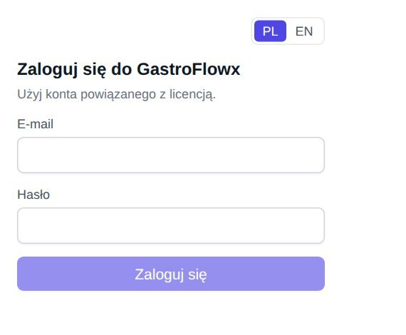
Okienko logowania rozszerzenia
Gdzie znajdziesz GastroFlowx w Gmailu
Pozycja „GastroFlowx” w lewym menu Gmaila – otwiera pełny panel CRM: pulpit, klientów, kontakty, zadania, przypomnienia i ustawienia.
Ikona GastroFlowx po prawej stronie otwartej wiadomości – panel boczny z kartą nadawcy tego maila.
Przycisk na górnym pasku Gmaila – szybkie przejście do pulpitu.
Język interfejsuPrzełącznik PL / EN znajdziesz w okienku rozszerzenia, w lewym dolnym rogu panelu CRM oraz w Ustawienia → Preferencje. Wybór obowiązuje od razu we wszystkich kartach.
Licencja wygasła lub brak licencji?Zamiast CRM zobaczysz ekran z informacją o licencji. Poproś administratora o przedłużenie lub przydzielenie miejsca, a potem kliknij Licencja odnowiona – sprawdź ponownie.
Rozdział 4
Instrukcja dla pracownika i kierownika
Ten rozdział opisuje codzienną pracę z klientami w Gmailu. Dotyczy w tym samym stopniu pracowników i kierowników – obie role mają identyczne funkcje.
4.1 Pulpit dnia
Kliknij GastroFlowx w lewym menu Gmaila. Dashboard pokazuje:
liczbę kontaktów i klientów oraz Podsumowanie na dziś – nowe maile, zadania i przypomnienia,
Przypomnienia i Zadania w zakładkach Zaległe, Dziś i 7 dni – zaznacz pole lub ✓, aby oznaczyć jako wykonane,
Ostatnie maile ze skrzynki odbiorczej z kategorią nadawcy – kliknięcie otwiera kartę klienta.
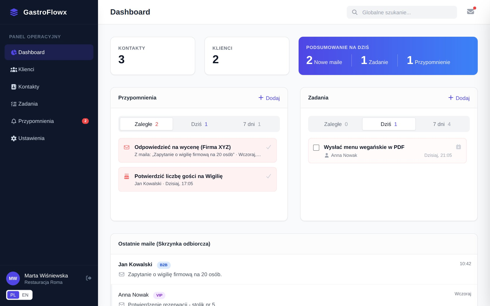
Pulpit dnia
4.2 Karta klienta przy mailu
Otwórz dowolną wiadomość. Po prawej stronie Gmaila kliknij ikonę GastroFlowx – zobaczysz kartę nadawcy. Tę samą kartę otwiera kliknięcie maila na liście Ostatnie maile na pulpicie. Karta zawiera kolejno:
nagłówek – imię i nazwisko, firma, kategoria i status, przyciski Napisz e-mail i Maile w Gmailu,
Dane kontaktowe – e-mail, telefon, firma i pola dodatkowe,
Oś czasu / Historia – wszystkie maile, notatki i zdarzenia.
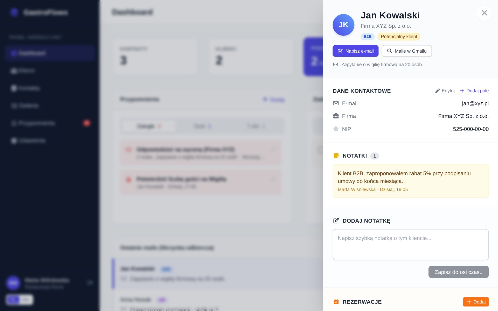
Karta klienta otwarta z pulpitu
4.3 Nowy nadawca – dodanie do CRM
Jeśli nadawcy nie ma jeszcze w bazie, karta pokaże komunikat „Tego nadawcy nie ma jeszcze w CRM” i krótki formularz:
Sprawdź Imię i nazwisko (podpowiadane z maila).
Uzupełnij Firma, Telefon, wybierz Kategoria.
Zostaw zaznaczone Klient (pełny profil) albo odznacz, jeśli to tylko kontakt.
Kliknij Dodaj do CRM.
Mail, przy którym dodałeś osobę, od razu trafi na jej oś czasu.
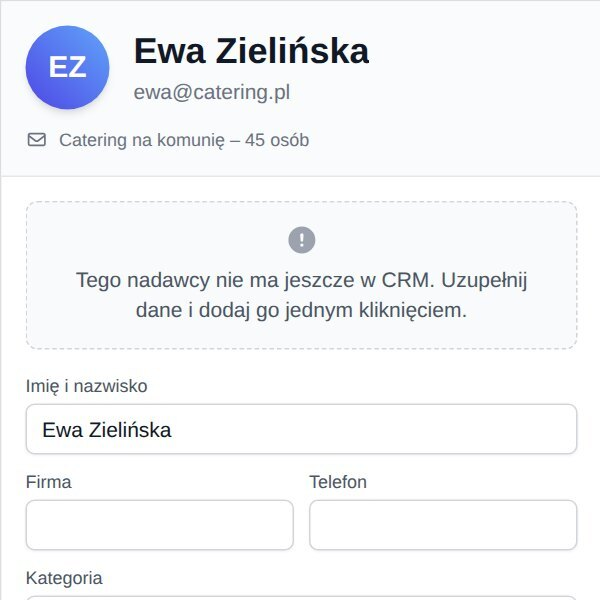
Panel przy wiadomości od nowego nadawcy
4.4 Dane kontaktowe i pola dodatkowe
Edytuj w sekcji Dane kontaktowe zmienia imię, firmę, telefon, kategorię i status.
Dodaj pole dodaje własną informację, np. Alergie: orzechy albo NIP. Podpowiedzi pól ustawia się w Ustawienia → Pola dodatkowe.
4.5 Notatki
Wpisz treść w polu Dodaj notatkę („Napisz szybką notatkę o tym kliencie…”).
Kliknij Zapisz do osi czasu.
Notatka pojawi się na osi czasu oraz w sekcji Notatki pod danymi kontaktowymi (trzy najnowsze; Pokaż wszystkie filtruje oś czasu). Swoje notatki możesz edytować i usuwać – najedź na notatkę i użyj ikony ołówka lub kosza.
4.6 Rezerwacje
W sekcji Rezerwacje kliknij Dodaj.
Uzupełnij Data, Godzina, Goście, opcjonalnie Stolik / sala, Okazja, Uwagi i zapisz.
Gdy gość potwierdzi, kliknij Potwierdź; rezygnację oznacz Anuluj rezerwację.
Każda zmiana zapisuje się na osi czasu jako zdarzenie systemowe.
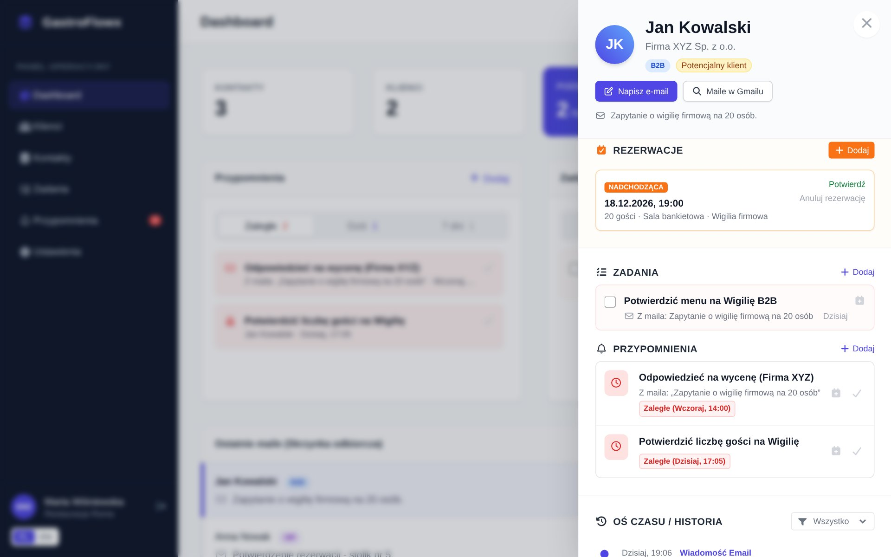
Rezerwacje, zadania i przypomnienia w karcie klienta
4.7 Zadania
Zadanie to coś do zrobienia z terminem, np. „Wysłać ofertę na wesele”. Dodasz je w karcie klienta (sekcja Zadania → Dodaj), na pulpicie lub w module Zadania przyciskiem Utwórz Zadanie:
Wpisz Tytuł, wybierz Kategoria i Priorytet (Normalny / Wysoki).
Ustaw Termin – domyślny termin ustawisz w Preferencjach.
Wybierz Kontakt (wpisz nazwę lub e-mail) i Przypisz do – siebie lub osobę z zespołu.
Kliknij Zapisz.
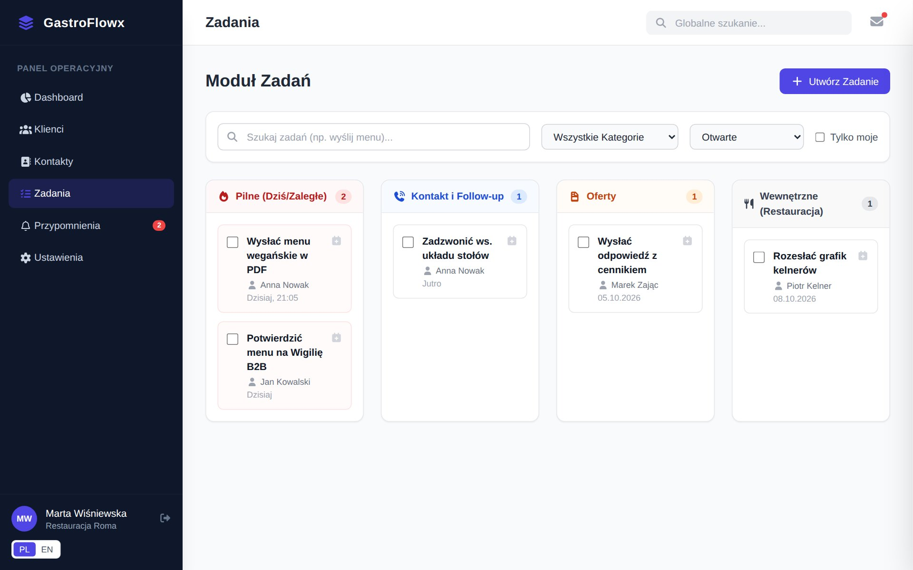
Moduł Zadań – kolumna „Pilne” zbiera zaległe i dzisiejsze zadania, pozostałe kolumny to kategorie zadań
W module Zadania możesz szukać, filtrować po kategorii i stanie (otwarte / wykonane) oraz zaznaczyć Tylko moje. Zadanie wykonane zaznacz polem wyboru.
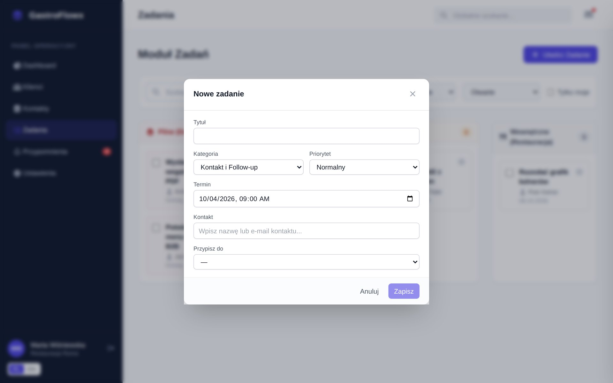
Formularz nowego zadania
4.8 Przypomnienia
Przypomnienie to sygnał „wróć do tego o danej porze”, np. „Oddzwonić w sprawie menu”. Dodasz je w karcie klienta (Przypomnienia → Dodaj) lub w module Przypomnienia przyciskiem Dodaj Przypomnienie: podaj Tytuł, Kategoria, Kiedy, opcjonalnie Kontakt i Notatki. Przypomnienia utworzone przy mailu pamiętają jego temat.
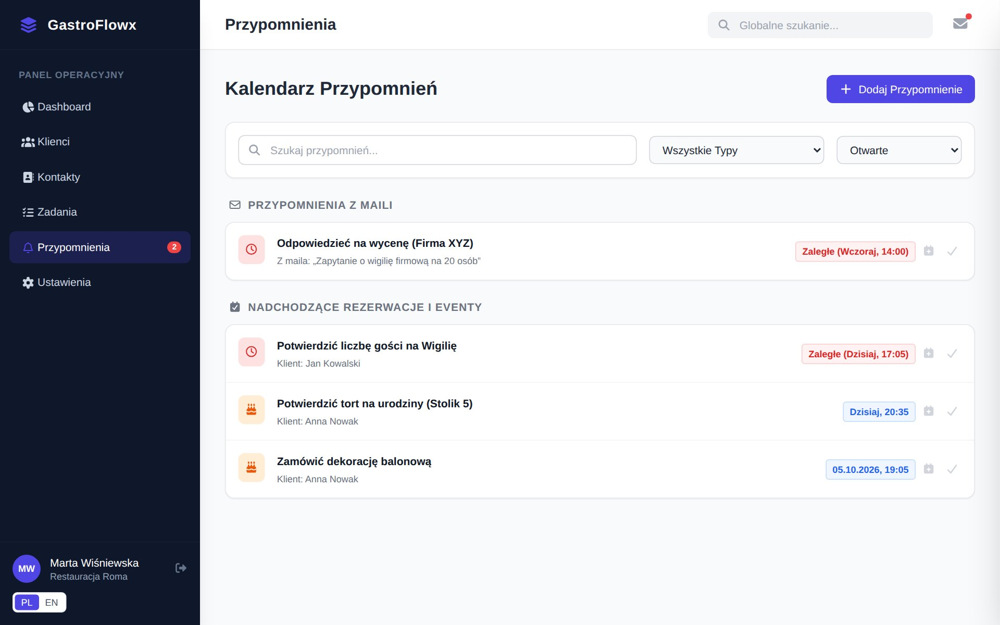
Kalendarz przypomnień – pogrupowany na przypomnienia z maili, rezerwacje i pozostałe
Czerwona plakietka Zaległe oznacza, że termin minął. Kliknij ✓, aby oznaczyć przypomnienie jako zrobione. Liczba zaległych przypomnień widnieje też przy pozycji Przypomnienia w menu.
4.9 Oś czasu, otwieranie maili i odpowiadanie
Kliknięcie karty maila na osi czasu otwiera ten wątek w Gmailu.
Otwórz w Gmailu – to samo, osobnym linkiem.
Odpowiedz – otwiera wątek i od razu pole odpowiedzi Gmaila. Odpowiedź zostaje w tym samym wątku.
Lista Wszystko w nagłówku osi czasu filtruje: tylko maile, tylko notatki lub tylko zdarzenia.
Wczytaj historię z Gmaila (jeśli integracja Google jest włączona) dociąga wcześniejszą korespondencję z klientem.
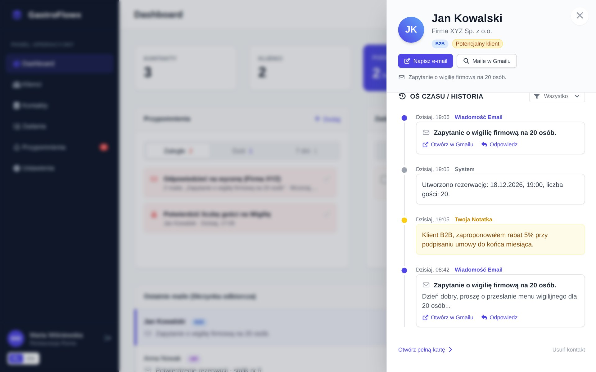
Oś czasu z linkami „Otwórz w Gmailu” i „Odpowiedz”
4.10 Pisanie nowego maila do klienta
W nagłówku karty klienta (oraz w pełnym profilu) kliknij Napisz e-mail – otworzy się nowe okno wiadomości Gmaila z adresem klienta w polu „Do”. Maile w Gmailu wyszukuje całą korespondencję z tym klientem.
4.11 Klienci, kontakty i wyszukiwanie
Klienci – baza klientów pogrupowana według kategorii, z ostatnią aktywnością. Nowy Klient dodaje klienta ręcznie. Kliknięcie wiersza otwiera pełną kartę klienta.
Kontakty – książka adresowa. Utwórz profil klienta zamienia kontakt w klienta.
Globalne szukanie (pole na górze) przeszukuje klientów i kontakty po nazwie, firmie i e-mailu.
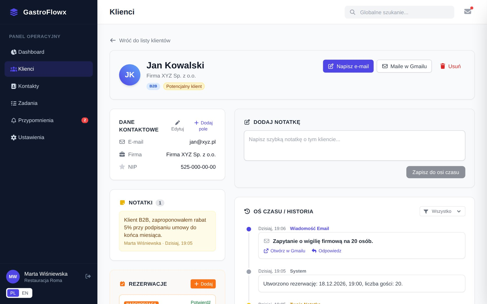
Pełna karta klienta
4.12 Kalendarz
W Ustawienia → Kalendarz:
Subskrypcja kalendarza (ICS) – kliknij Utwórz link kalendarza, a potem Dodaj do Google, Dodaj do Outlooka lub skopiuj link do kalendarza Apple. W kalendarzu pojawią się Twoje zadania i przypomnienia (opcjonalnie także rezerwacje), z powiadomieniem przed terminem. Kalendarze odświeżają subskrypcje z opóźnieniem – Google nawet do kilku godzin.
Konto Google (jeśli włączone w Twojej restauracji) – Połącz z Google łączy konto z bieżącej karty Gmaila. Zadania trafiają wtedy natychmiast do Kalendarza Google, a historia maili wczytuje się automatycznie. Przy pierwszym łączeniu Google może wyświetlić ostrzeżenie o niezweryfikowanej aplikacji – kliknij Zaawansowane → Przejdź do GastroFlowx.
Link kalendarza jest prywatnyKto ma link, widzi Twoje zadania. Nie udostępniaj go. Jeśli wyciekł, kliknij Wygeneruj nowy link – stary przestanie działać.
4.13 Moje preferencje
Ustawienia → Preferencje: domyślna godzina przypomnienia, domyślny termin zadania i język. Te ustawienia dotyczą tylko Twojego konta.
Rozdział 5
Ustawienia restauracji i praca w zespole
Wszystko, co opisuje ten rozdział, może robić każdy użytkownik restauracji – pracownik i kierownik mają tu te same możliwości. Poniżej ustawienia wspólne dla całej restauracji oraz dobre praktyki pracy zespołowej.
5.1 Ustawienia restauracji
W Ustawienia znajdziesz zakładki słowników wspólnych dla całego zespołu:
Zakładka
Do czego służy
Przykłady
Kategorie klientów
Grupowanie klientów na liście i plakietka w karcie. Kolor i ikona do wyboru.
VIP, B2B, Wesela, Stali goście
Statusy
Etap relacji z klientem. Status oznaczony jako Domyślny dostaje każdy nowy kontakt.
Lead, Potencjalny klient, Klient, Nieaktywny
Kategorie zadań
Kolumny tablicy zadań i typy w formularzu zadania.
Follow-up, Oferty, Degustacje, Wewnętrzne
Pola dodatkowe
Podpowiedzi pól w karcie klienta (tekst, liczba, data, tak/nie).
Alergie, NIP, Ulubiony stolik
Dodawanie: wpisz nazwę w dolnym polu i kliknij Dodaj.
Zmiana nazwy: popraw tekst w polu i naciśnij Enter. Kolor/ikona: wybierz z listy.
Kolejność: strzałki ↑ ↓ po lewej. Kolejność obowiązuje na listach i na tablicy zadań.
Usuwanie: ikona kosza. Jeśli status lub kategoria zadań jest w użyciu, system poprosi o wskazanie, dokąd przenieść powiązane kontakty lub zadania (Przenieś i usuń). Ostatniej pozycji nie da się usunąć.
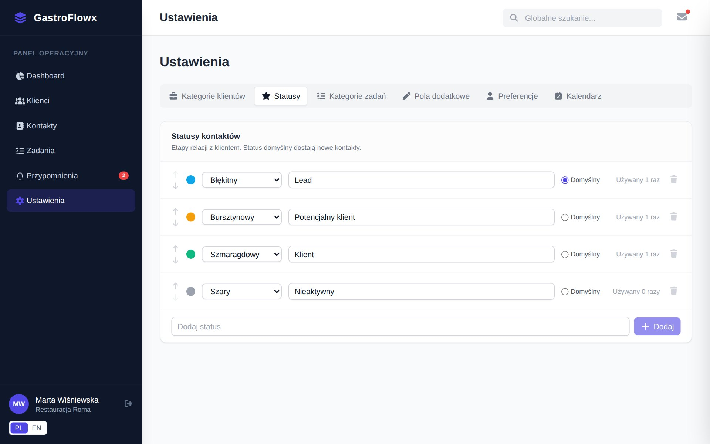
Ustawienia – statusy kontaktów z licznikiem użyć
5.2 Dobre praktyki pracy zespołu
Przydzielaj zadania polem Przypisz do – osoba zobaczy je na swoim pulpicie i (jeśli tak ustawi) w swoim kalendarzu.
Przeglądaj tablicęZadania – kolumna Pilne (Dziś/Zaległe) pokazuje, co wymaga reakcji. Przełącz filtr na wykonane, aby sprawdzić, co zespół zamknął.
Ustal zasady notatek – np. każda rozmowa telefoniczna z klientem kończy się krótką notatką. Notatki widzi cały zespół.
Dbaj o statusy – aktualny status klienta ułatwia planowanie działań (np. przypomnienie do wszystkich „Potencjalnych klientów”).
5.3 Konta i licencje zespołu
Nowe konto, reset hasła, zmiana roli, przydział lub zwolnienie miejsca w licencji oraz wylogowanie zgubionego komputera wykonuje Master Admin. Zgłoś mu: imię i nazwisko, adres e-mail pracownika i jego rolę.
Odejście pracownikaPoproś administratora o usunięcie konta lub zwolnienie miejsca. Klienci, notatki i zadania utworzone przez tę osobę zostają w restauracji.
Rozdział 6
Instrukcja dla Master Admina
Master Admin zarządza restauracjami, kontami i licencjami w panelu przeglądarkowym app.gastroflowx.pl. Konto Master Admina nie służy do pracy w CRM – w Gmailu zobaczy jedynie informację, że zarządza systemem z panelu.
6.1 Logowanie i przegląd
Otwórz https://app.gastroflowx.pl.
Podaj E-mail i Hasło. Zaznacz Nie wylogowuj mnie tylko na własnym komputerze.
Kliknij Zaloguj się.
Przegląd pokazuje liczbę aktywnych restauracji, użytkowników (i ilu z nich nie ma licencji), zajęte miejsca oraz licencje wygasające w ciągu 30 dni.
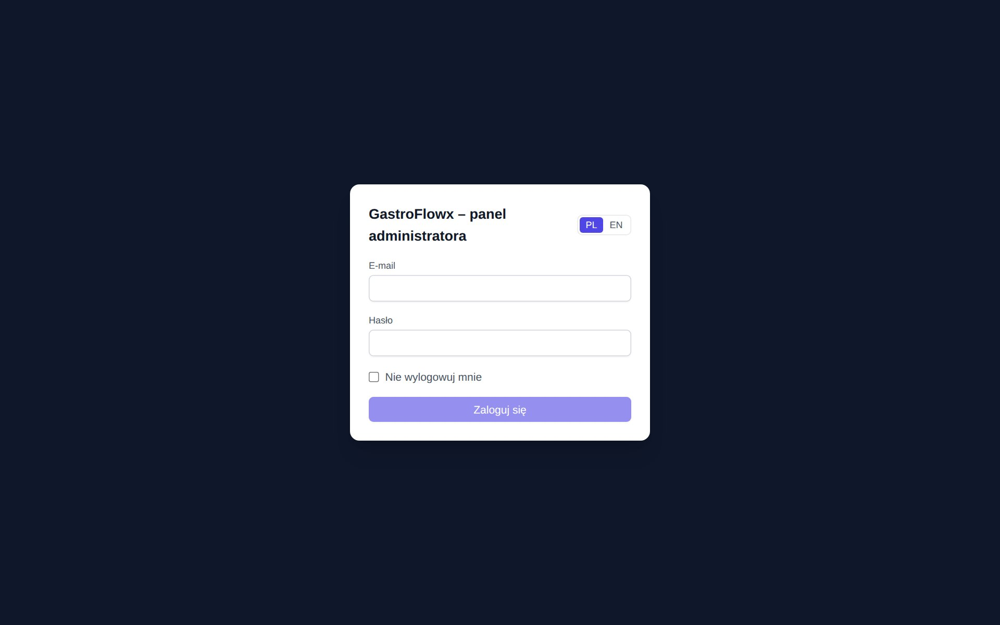
Logowanie do panelu administratora
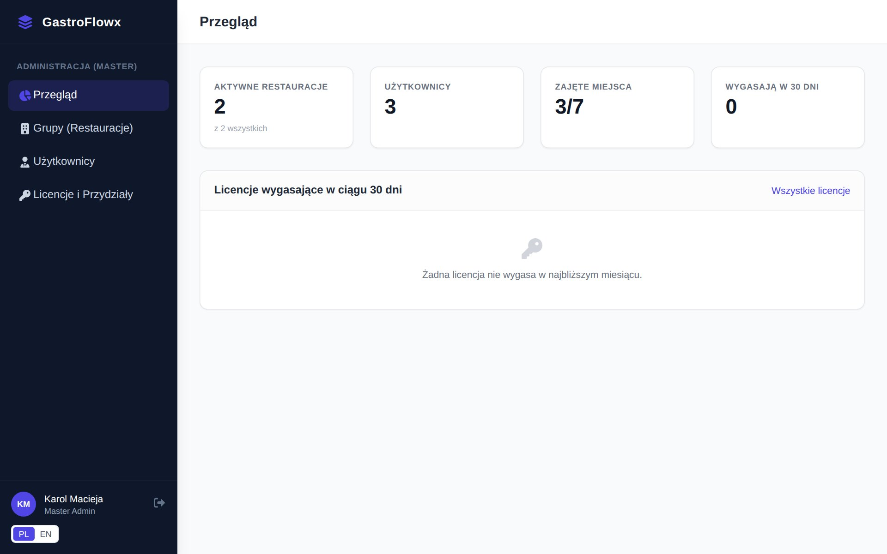
Przegląd
6.2 Restauracje (grupy)
Grupy (Restauracje) → Nowa grupa: Nazwa, E-mail kontaktowy, Strefa czasowa. Nowa restauracja dostaje gotowy zestaw statusów, kategorii zadań i pól.
Kliknięcie restauracji otwiera szczegóły: użytkowników, licencje i liczbę kontaktów. Stąd dodasz użytkownika lub licencję przyciskiem Dodaj.
Dezaktywuj wstrzymuje dostęp całej restauracji (dane zostają). Aktywuj przywraca dostęp.
Usunięcie grupy kasuje restaurację wraz z kontaktami, historią, rezerwacjami, licencjami i kontami. Aby potwierdzić, wpisz identyfikator grupy i kliknij Usuń grupę na zawsze. Tej operacji nie można cofnąć.
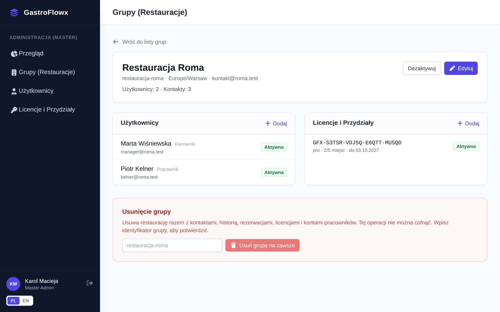
Szczegóły restauracji
6.3 Użytkownicy
Nowy użytkownik: Imię i nazwisko, E-mail, Hasło, Rola (Pracownik / Kierownik / Master Admin), Grupa (restauracja) i od razu Licencja, jeśli są wolne miejsca.
Ikona ołówka – edycja danych, roli i grupy. Pole Nowe hasło zostaw puste, jeśli nie zmieniasz hasła. Zmiana grupy zwalnia miejsce w licencji i wylogowuje użytkownika.
Ikona wyjścia – Wyloguj ze wszystkich rozszerzeń, np. po zgubieniu laptopa.
Ikona kosza – usuwa konto. Kontakty i zadania zostają w restauracji.
Listę filtrujesz po restauracji, roli i wyszukiwarką.
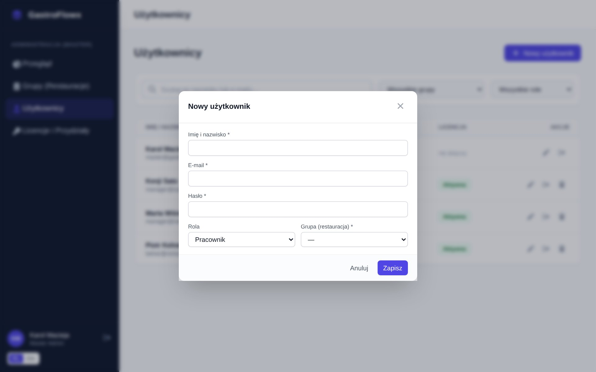
Nowy użytkownik
6.4 Licencje i przydziały
Nowa licencja: restauracja, plan, liczba Miejsca, okres ważności (Od – Do) i Status.
Rozwiń licencję strzałką, aby zobaczyć Przydziały. Przydziel daje miejsce wybranemu użytkownikowi, Zwolnij miejsce je odbiera. Gdy miejsca się skończą, zwiększ ich liczbę w edycji licencji.
Przyciski +30 dni i +1 rok przedłużają licencję jednym kliknięciem.
Wygeneruj nowy klucz zmienia klucz licencji (np. przy podejrzeniu wycieku).
Pasek Miejsca pokazuje wykorzystanie (np. 2/5). Filtr Wygasające (30 dni) pomaga planować odnowienia.
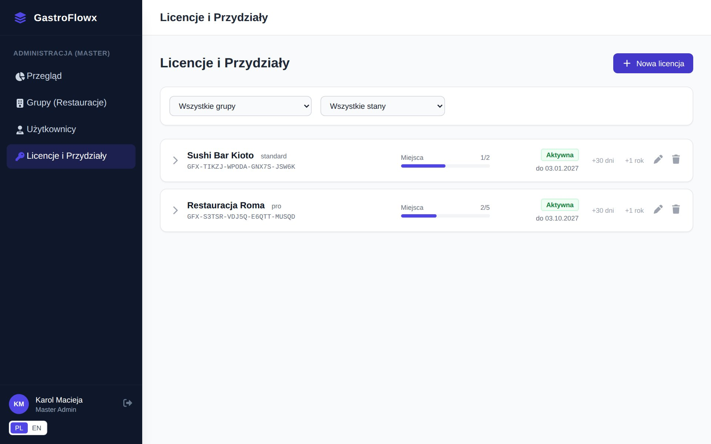
Licencje i przydziały
6.5 Wdrożenie nowej restauracji – lista kontrolna
Grupy (Restauracje) → Nowa grupa – nazwa, e-mail, strefa czasowa.
W szczegółach restauracji dodaj licencję z odpowiednią liczbą miejsc i okresem.
Dodaj konta dla osób z zespołu, każdemu przydzielając miejsce. Rola Pracownik lub Kierownik jest tylko oznaczeniem stanowiska – obie mają w CRM te same funkcje.
Przekaż każdej osobie: link do rozszerzenia w Chrome Web Store, swój e-mail i hasło startowe oraz ten dokument.
Jeśli restauracja korzysta z integracji Google w trybie testowym, dopisz adresy Gmail pracowników jako użytkowników testowych w Google Cloud (Google Auth Platform → Odbiorcy).
Poproś restaurację o przejrzenie Ustawień (kategorie, statusy, pola) przed startem pracy zespołu.
Rozdział 7
Najczęstsze pytania i rozwiązywanie problemów
Problem
Co zrobić
Nie widzę GastroFlowx w Gmailu
Odśwież kartę Gmaila (F5). Sprawdź w chrome://extensions, czy rozszerzenie jest włączone. Po aktualizacji rozszerzenia zawsze odśwież Gmaila.
„GastroFlowx został zaktualizowany. Odśwież tę kartę Gmaila.”
Rozszerzenie zaktualizowało się w tle – naciśnij F5.
Licencja restauracji wygasła lub nie masz przydzielonego miejsca. Skontaktuj się z administratorem, potem kliknij Licencja odnowiona – sprawdź ponownie.
Nie pamiętam hasła
Hasło resetuje Master Admin (edycja użytkownika → Nowe hasło).
Zgubiłem laptopa
Zgłoś to administratorowi – użyje opcji Wyloguj ze wszystkich rozszerzeń.
Karta klienta nie pokazuje się przy mailu
Kliknij ikonę GastroFlowx po prawej stronie otwartej wiadomości. W wątkach z kilkoma osobami wybierz właściwą osobę z listy u góry panelu.
Maila na osi czasu nie da się kliknąć
Starsze wpisy mogą nie mieć powiązania z wątkiem Gmaila – użyj Maile w Gmailu w nagłówku karty.
„Odpowiedz” otworzyło wątek, ale bez pola odpowiedzi
Kliknij Odpowiedz pod wiadomością w Gmailu ręcznie. Może się tak zdarzyć po zmianach wyglądu Gmaila.
Zadania nie pojawiają się w kalendarzu
Subskrypcje ICS odświeżają się z opóźnieniem (Google do kilku godzin). Natychmiastową synchronizację daje połączenie z Google w Ustawienia → Kalendarz.
Google: „Aplikacja niezweryfikowana”
To normalne w trybie testowym – kliknij Zaawansowane → Przejdź do GastroFlowx. Jeśli łączenie jest zablokowane, administrator musi dopisać Twój adres Gmail do użytkowników testowych.
Google: „wybrano inne konto”
Na ekranie Google wybierz to samo konto, w którym masz otwartego Gmaila, i połącz ponownie.
Panel administratora: „Sesja wygasła”
Odśwież stronę i zaloguj się ponownie. Jeśli powtarza się stale, problem leży w konfiguracji serwera (domena ciasteczek) – patrz dokumentacja techniczna (README).
Rozdział 8
Bezpieczeństwo i dane
Szyfrowane połączenia. Cała komunikacja między rozszerzeniem, panelem a serwerem odbywa się przez HTTPS.
Hasła i tokeny przechowywane są wyłącznie w postaci skrótów kryptograficznych. Logowanie rozszerzenia wygasa po 30 dniach.
Separacja restauracji. Każdy użytkownik widzi wyłącznie dane swojej restauracji.
Dane z Gmaila. System zapisuje tylko metadane maili klientów zapisanych w CRM: temat, nadawcę, datę i krótki fragment. Nie zapisuje pełnej treści ani załączników.
Konto Google (opcjonalne). Token dostępu Google pozostaje w przeglądarce użytkownika i nie trafia na serwer GastroFlowx. Dostęp można cofnąć przyciskiem Rozłącz lub na myaccount.google.com/permissions.
Serwery w Polsce (UE). Szczegóły przetwarzania danych osobowych opisuje polityka prywatności: app.gastroflowx.pl/polityka-prywatnosci.html.
Dobre praktyki zespołuNie udostępniaj swojego konta innym osobom – każdy pracownik powinien mieć własne konto (notatki i zadania są podpisane). Wylogowuj się na komputerach współdzielonych. Nie zapisuj w notatkach haseł ani danych kart płatniczych.
Kontakt i wsparcie
KM ENTERPRISES Karol Macieja (kmenterprises.pl) · e-mail: kontakt@gastroflowx.pl · strona: gastroflowx.pl